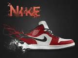
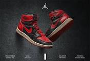
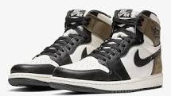
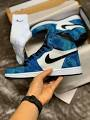
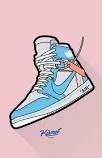

1.Sneaker News

Vị trí đầu tiên ở thời điểm hiện tại chúng ta phải nhắc đến đó là trang Sneaker News với lưu lượng try cập khủng nhất hiện nay.Cập nhật tin tức nhanh chóng về sneaker, ngày ra mắt sản phẩm(release), hình ảnh sneaker sắp ra mắt va có giới thiệu thêm một số website mua bán giày uy tín trên thế giới.Thành lập từ năm 2006 với mong muốn cung cấp tất cả các thông tin liên quan về giày dép một cách nhanh nhất và chính xác nhất.Với lượng truy cập lớn nhất ở thời điểm hiện tại nên xứng đáng nằm vị trí đầu tiên giành cho Sneaker News.
Link tham khảo: https://sneakernews.com/
2.KicksOnFire

Nơi cập nhật tin tức mới nhất về sneaker như ngày phát hành, giá bán lẻ, có cả văn hóa cũng như lịch sử cho dân Sneakerhead. Với giao diện dễ tương tác và tìm kiếm thông tin nhanh chóng,thuận tiện nên xứng đáng nằm ở vị trí top 2 này. Thêm một điều đặc biệt là có liệt kệ 100 đôi đang trending theo tuần, theo tháng và theo năm ít trang web nào có.
Link tham khảo: https://www.kicksonfire.com/
3.Complex

Là một trang tin tổng hợp rất nhiều thông tin như âm nhạc, văn hóa, sneaker, phong cách và cuộc sống.Điều thù vị mà trang complex đứng ở vị trí thứ 4 đó là luôn có những phỏng vấn độc quyền cùng những người nổi tiếng trên đất nước Mỹ.
Link tham khảo: https://www.complex.com/
3.Complex

Là một trang tin tổng hợp rất nhiều thông tin như âm nhạc, văn hóa, sneaker, phong cách và cuộc sống.Điều thù vị mà trang complex đứng ở vị trí thứ 4 đó là luôn có những phỏng vấn độc quyền cùng những người nổi tiếng trên đất nước Mỹ.
Link tham khảo: https://www.complex.com/
4.Hypebeast

Có những đánh giá chuyên sâu về chất liệu,nguồn cảm hứng và ý tưởng làm nên đôi giày của các hãng lớn như Nike,Jordan,Adidas,Dior,...
Luôn luôn đi đầu xu hướng đem nguồn thông tin đa dạng và đáng tin cậy. Các bạn có thể khám phá dưới đường link mình để nhé.
Link tham khảo: https://hypebeast.com/
5.Jodan
Là một trang tin tổng hợp rất nhiều thông tin như âm nhạc, văn hóa, sneaker, phong cách và cuộc sống.Điều thù vị mà trang complex đứng ở vị trí thứ 4 đó là luôn có những phỏng vấn độc quyền cùng những người nổi tiếng trên đất nước Mỹ.
Link tham khảo: https://www.complex.com/